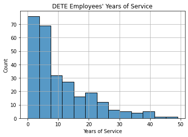
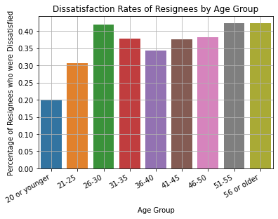
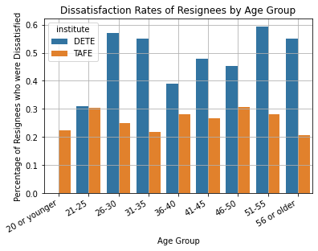
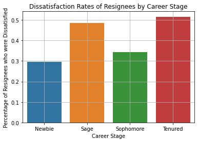
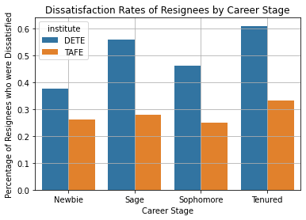

import pandas as pd
import numpy as np
import matplotlib.pyplot as plt
import seaborn as sns
Overview
This project deals with messy data from employee exit surveys from 2 government institutions in Queensland, Australia:
- Department of Education, Training and Employment (DETE)
- Technical and Further Education (TAFE)
The project aims to determine what percentage of the resignees was dissatisfied with work:
- based on age group
- based on career stage
On the technical side, this project is intended to showcase the use of several intermediate Pandas techniques for data cleaning and manipulation, including vectorized methods, mapping functions across data, dropping rows and columns, and combining DataFrames.
Note
I wrote this notebook for the Dataquest course’s Guided Project: Clean and Analyze Employee Exit Surveys. The general project flow and research questions came from Dataquest. However, all of the text and code here are written by me unless stated otherwise.
Package Installs
Data Overview
TAFE Survey
The TAFE employee exit survey data can be found here.
Unfortunately, the CSV file itself is no longer available on the Australian government’s websites, so I used a copy that I downloaded from Dataquest.
Columns
Below is information about the TAFE columns.
tafe = pd.read_csv("./private/2021-06-01-EES-Files/tafe_survey.csv")
tafe.info()<class 'pandas.core.frame.DataFrame'>
RangeIndex: 702 entries, 0 to 701
Data columns (total 72 columns):
# Column Non-Null Count Dtype
--- ------ -------------- -----
0 Record ID 702 non-null float64
1 Institute 702 non-null object
2 WorkArea 702 non-null object
3 CESSATION YEAR 695 non-null float64
4 Reason for ceasing employment 701 non-null object
5 Contributing Factors. Career Move - Public Sector 437 non-null object
6 Contributing Factors. Career Move - Private Sector 437 non-null object
7 Contributing Factors. Career Move - Self-employment 437 non-null object
8 Contributing Factors. Ill Health 437 non-null object
9 Contributing Factors. Maternity/Family 437 non-null object
10 Contributing Factors. Dissatisfaction 437 non-null object
11 Contributing Factors. Job Dissatisfaction 437 non-null object
12 Contributing Factors. Interpersonal Conflict 437 non-null object
13 Contributing Factors. Study 437 non-null object
14 Contributing Factors. Travel 437 non-null object
15 Contributing Factors. Other 437 non-null object
16 Contributing Factors. NONE 437 non-null object
17 Main Factor. Which of these was the main factor for leaving? 113 non-null object
18 InstituteViews. Topic:1. I feel the senior leadership had a clear vision and direction 608 non-null object
19 InstituteViews. Topic:2. I was given access to skills training to help me do my job better 613 non-null object
20 InstituteViews. Topic:3. I was given adequate opportunities for personal development 610 non-null object
21 InstituteViews. Topic:4. I was given adequate opportunities for promotion within %Institute]Q25LBL% 608 non-null object
22 InstituteViews. Topic:5. I felt the salary for the job was right for the responsibilities I had 615 non-null object
23 InstituteViews. Topic:6. The organisation recognised when staff did good work 607 non-null object
24 InstituteViews. Topic:7. Management was generally supportive of me 614 non-null object
25 InstituteViews. Topic:8. Management was generally supportive of my team 608 non-null object
26 InstituteViews. Topic:9. I was kept informed of the changes in the organisation which would affect me 610 non-null object
27 InstituteViews. Topic:10. Staff morale was positive within the Institute 602 non-null object
28 InstituteViews. Topic:11. If I had a workplace issue it was dealt with quickly 601 non-null object
29 InstituteViews. Topic:12. If I had a workplace issue it was dealt with efficiently 597 non-null object
30 InstituteViews. Topic:13. If I had a workplace issue it was dealt with discreetly 601 non-null object
31 WorkUnitViews. Topic:14. I was satisfied with the quality of the management and supervision within my work unit 609 non-null object
32 WorkUnitViews. Topic:15. I worked well with my colleagues 605 non-null object
33 WorkUnitViews. Topic:16. My job was challenging and interesting 607 non-null object
34 WorkUnitViews. Topic:17. I was encouraged to use my initiative in the course of my work 610 non-null object
35 WorkUnitViews. Topic:18. I had sufficient contact with other people in my job 613 non-null object
36 WorkUnitViews. Topic:19. I was given adequate support and co-operation by my peers to enable me to do my job 609 non-null object
37 WorkUnitViews. Topic:20. I was able to use the full range of my skills in my job 609 non-null object
38 WorkUnitViews. Topic:21. I was able to use the full range of my abilities in my job. ; Category:Level of Agreement; Question:YOUR VIEWS ABOUT YOUR WORK UNIT] 608 non-null object
39 WorkUnitViews. Topic:22. I was able to use the full range of my knowledge in my job 608 non-null object
40 WorkUnitViews. Topic:23. My job provided sufficient variety 611 non-null object
41 WorkUnitViews. Topic:24. I was able to cope with the level of stress and pressure in my job 610 non-null object
42 WorkUnitViews. Topic:25. My job allowed me to balance the demands of work and family to my satisfaction 611 non-null object
43 WorkUnitViews. Topic:26. My supervisor gave me adequate personal recognition and feedback on my performance 606 non-null object
44 WorkUnitViews. Topic:27. My working environment was satisfactory e.g. sufficient space, good lighting, suitable seating and working area 610 non-null object
45 WorkUnitViews. Topic:28. I was given the opportunity to mentor and coach others in order for me to pass on my skills and knowledge prior to my cessation date 609 non-null object
46 WorkUnitViews. Topic:29. There was adequate communication between staff in my unit 603 non-null object
47 WorkUnitViews. Topic:30. Staff morale was positive within my work unit 606 non-null object
48 Induction. Did you undertake Workplace Induction? 619 non-null object
49 InductionInfo. Topic:Did you undertake a Corporate Induction? 432 non-null object
50 InductionInfo. Topic:Did you undertake a Institute Induction? 483 non-null object
51 InductionInfo. Topic: Did you undertake Team Induction? 440 non-null object
52 InductionInfo. Face to Face Topic:Did you undertake a Corporate Induction; Category:How it was conducted? 555 non-null object
53 InductionInfo. On-line Topic:Did you undertake a Corporate Induction; Category:How it was conducted? 555 non-null object
54 InductionInfo. Induction Manual Topic:Did you undertake a Corporate Induction? 555 non-null object
55 InductionInfo. Face to Face Topic:Did you undertake a Institute Induction? 530 non-null object
56 InductionInfo. On-line Topic:Did you undertake a Institute Induction? 555 non-null object
57 InductionInfo. Induction Manual Topic:Did you undertake a Institute Induction? 553 non-null object
58 InductionInfo. Face to Face Topic: Did you undertake Team Induction; Category? 555 non-null object
59 InductionInfo. On-line Topic: Did you undertake Team Induction?process you undertook and how it was conducted.] 555 non-null object
60 InductionInfo. Induction Manual Topic: Did you undertake Team Induction? 555 non-null object
61 Workplace. Topic:Did you and your Manager develop a Performance and Professional Development Plan (PPDP)? 608 non-null object
62 Workplace. Topic:Does your workplace promote a work culture free from all forms of unlawful discrimination? 594 non-null object
63 Workplace. Topic:Does your workplace promote and practice the principles of employment equity? 587 non-null object
64 Workplace. Topic:Does your workplace value the diversity of its employees? 586 non-null object
65 Workplace. Topic:Would you recommend the Institute as an employer to others? 581 non-null object
66 Gender. What is your Gender? 596 non-null object
67 CurrentAge. Current Age 596 non-null object
68 Employment Type. Employment Type 596 non-null object
69 Classification. Classification 596 non-null object
70 LengthofServiceOverall. Overall Length of Service at Institute (in years) 596 non-null object
71 LengthofServiceCurrent. Length of Service at current workplace (in years) 596 non-null object
dtypes: float64(2), object(70)
memory usage: 395.0+ KBThe formatting is different because some column names are apparently too long. However, we can see that:
- There are 702 rows and 72 columns.
- A few columns contain decimals, and most contain text.
- Many of the columns have missing values.
Dataquest notes a few columns in this dataset:
- “
Record ID: An id used to identify the participant of the survey” - “
Reason for ceasing employment: The reason why the person’s employment ended” - “
LengthofServiceOverall. Overall Length of Service at Institute (in years): The length of the person’s employment (in years)”
Additionally, there are groups of columns that all start with the same name. These group names are:
- Contributing Factors
- Institute Views
- Work Unit Views
- Induction Info
- Workplace
Currently, there are too many columns for analysis. However, since the Contributing Factors columns are directly related to the employee’s resignation, we could just keep those and remove the other 4 groups of columns.
Descriptive Statistics
Below are descriptive statistics for the columns.
tafe.describe(
include = "all",
datetime_is_numeric = True,
)| Record ID | Institute | WorkArea | CESSATION YEAR | Reason for ceasing employment | Contributing Factors. Career Move - Public Sector | Contributing Factors. Career Move - Private Sector | Contributing Factors. Career Move - Self-employment | Contributing Factors. Ill Health | Contributing Factors. Maternity/Family | ... | Workplace. Topic:Does your workplace promote a work culture free from all forms of unlawful discrimination? | Workplace. Topic:Does your workplace promote and practice the principles of employment equity? | Workplace. Topic:Does your workplace value the diversity of its employees? | Workplace. Topic:Would you recommend the Institute as an employer to others? | Gender. What is your Gender? | CurrentAge. Current Age | Employment Type. Employment Type | Classification. Classification | LengthofServiceOverall. Overall Length of Service at Institute (in years) | LengthofServiceCurrent. Length of Service at current workplace (in years) | |
|---|---|---|---|---|---|---|---|---|---|---|---|---|---|---|---|---|---|---|---|---|---|
| count | 7.020000e+02 | 702 | 702 | 695.000000 | 701 | 437 | 437 | 437 | 437 | 437 | ... | 594 | 587 | 586 | 581 | 596 | 596 | 596 | 596 | 596 | 596 |
| unique | NaN | 12 | 2 | NaN | 6 | 2 | 2 | 2 | 2 | 2 | ... | 2 | 2 | 2 | 2 | 2 | 9 | 5 | 9 | 7 | 7 |
| top | NaN | Brisbane North Institute of TAFE | Non-Delivery (corporate) | NaN | Resignation | - | - | - | - | - | ... | Yes | Yes | Yes | Yes | Female | 56 or older | Permanent Full-time | Administration (AO) | Less than 1 year | Less than 1 year |
| freq | NaN | 161 | 432 | NaN | 340 | 375 | 336 | 420 | 403 | 411 | ... | 536 | 512 | 488 | 416 | 389 | 162 | 237 | 293 | 147 | 177 |
| mean | 6.346026e+17 | NaN | NaN | 2011.423022 | NaN | NaN | NaN | NaN | NaN | NaN | ... | NaN | NaN | NaN | NaN | NaN | NaN | NaN | NaN | NaN | NaN |
| std | 2.515071e+14 | NaN | NaN | 0.905977 | NaN | NaN | NaN | NaN | NaN | NaN | ... | NaN | NaN | NaN | NaN | NaN | NaN | NaN | NaN | NaN | NaN |
| min | 6.341330e+17 | NaN | NaN | 2009.000000 | NaN | NaN | NaN | NaN | NaN | NaN | ... | NaN | NaN | NaN | NaN | NaN | NaN | NaN | NaN | NaN | NaN |
| 25% | 6.343954e+17 | NaN | NaN | 2011.000000 | NaN | NaN | NaN | NaN | NaN | NaN | ... | NaN | NaN | NaN | NaN | NaN | NaN | NaN | NaN | NaN | NaN |
| 50% | 6.345835e+17 | NaN | NaN | 2011.000000 | NaN | NaN | NaN | NaN | NaN | NaN | ... | NaN | NaN | NaN | NaN | NaN | NaN | NaN | NaN | NaN | NaN |
| 75% | 6.348005e+17 | NaN | NaN | 2012.000000 | NaN | NaN | NaN | NaN | NaN | NaN | ... | NaN | NaN | NaN | NaN | NaN | NaN | NaN | NaN | NaN | NaN |
| max | 6.350730e+17 | NaN | NaN | 2013.000000 | NaN | NaN | NaN | NaN | NaN | NaN | ... | NaN | NaN | NaN | NaN | NaN | NaN | NaN | NaN | NaN | NaN |
11 rows × 72 columns
Some text columns appear to have values that only contain a single hyphen (-); these will have to be investigated later.
DETE Survey
The DETE employee exit survey can be found here. The copy used in this project is a slightly modified version downloaded from Dataquest for convenience. It is still complete in terms of the number of entries.
Columns
Below are the column names and types.
dete = pd.read_csv("./private/2021-06-01-EES-Files/dete_survey.csv")
dete.info()<class 'pandas.core.frame.DataFrame'>
RangeIndex: 822 entries, 0 to 821
Data columns (total 56 columns):
# Column Non-Null Count Dtype
--- ------ -------------- -----
0 ID 822 non-null int64
1 SeparationType 822 non-null object
2 Cease Date 822 non-null object
3 DETE Start Date 822 non-null object
4 Role Start Date 822 non-null object
5 Position 817 non-null object
6 Classification 455 non-null object
7 Region 822 non-null object
8 Business Unit 126 non-null object
9 Employment Status 817 non-null object
10 Career move to public sector 822 non-null bool
11 Career move to private sector 822 non-null bool
12 Interpersonal conflicts 822 non-null bool
13 Job dissatisfaction 822 non-null bool
14 Dissatisfaction with the department 822 non-null bool
15 Physical work environment 822 non-null bool
16 Lack of recognition 822 non-null bool
17 Lack of job security 822 non-null bool
18 Work location 822 non-null bool
19 Employment conditions 822 non-null bool
20 Maternity/family 822 non-null bool
21 Relocation 822 non-null bool
22 Study/Travel 822 non-null bool
23 Ill Health 822 non-null bool
24 Traumatic incident 822 non-null bool
25 Work life balance 822 non-null bool
26 Workload 822 non-null bool
27 None of the above 822 non-null bool
28 Professional Development 808 non-null object
29 Opportunities for promotion 735 non-null object
30 Staff morale 816 non-null object
31 Workplace issue 788 non-null object
32 Physical environment 817 non-null object
33 Worklife balance 815 non-null object
34 Stress and pressure support 810 non-null object
35 Performance of supervisor 813 non-null object
36 Peer support 812 non-null object
37 Initiative 813 non-null object
38 Skills 811 non-null object
39 Coach 767 non-null object
40 Career Aspirations 746 non-null object
41 Feedback 792 non-null object
42 Further PD 768 non-null object
43 Communication 814 non-null object
44 My say 812 non-null object
45 Information 816 non-null object
46 Kept informed 813 non-null object
47 Wellness programs 766 non-null object
48 Health & Safety 793 non-null object
49 Gender 798 non-null object
50 Age 811 non-null object
51 Aboriginal 16 non-null object
52 Torres Strait 3 non-null object
53 South Sea 7 non-null object
54 Disability 23 non-null object
55 NESB 32 non-null object
dtypes: bool(18), int64(1), object(37)
memory usage: 258.6+ KBID contains integers, whereas all other columns either contain text or booleans. Also, many of the columns have missing values.
There are 822 rows (employees) and 56 columns (survey questions). Dataquest describes a few notable columns as follows:
- “
ID: An id used to identify the participant of the survey” - “
SeparationType: The reason why the person’s employment ended” - “
Cease Date: The year or month the person’s employment ended” - “
DETE Start Date: The year the person began employment with the DETE”
Also, if we look closely, we can see that many of the columns in the DETE dataset match columns in the TAFE dataset. For example:
print("TAFE Columns")
print(list(tafe.columns[5:17]))
print("\nDETE Columns")
print(list(dete.columns[10:28]))TAFE Columns
['Contributing Factors. Career Move - Public Sector ', 'Contributing Factors. Career Move - Private Sector ', 'Contributing Factors. Career Move - Self-employment', 'Contributing Factors. Ill Health', 'Contributing Factors. Maternity/Family', 'Contributing Factors. Dissatisfaction', 'Contributing Factors. Job Dissatisfaction', 'Contributing Factors. Interpersonal Conflict', 'Contributing Factors. Study', 'Contributing Factors. Travel', 'Contributing Factors. Other', 'Contributing Factors. NONE']
DETE Columns
['Career move to public sector', 'Career move to private sector', 'Interpersonal conflicts', 'Job dissatisfaction', 'Dissatisfaction with the department', 'Physical work environment', 'Lack of recognition', 'Lack of job security', 'Work location', 'Employment conditions', 'Maternity/family', 'Relocation', 'Study/Travel', 'Ill Health', 'Traumatic incident', 'Work life balance', 'Workload', 'None of the above']These two sets of columns represent the “Contributing Factors” group in each survey. These are some of the columns that we want to keep for analysis; this will be addressed in data cleaning later.
Descriptive Statistics
We can view descriptive statistics for all columns below.
dete.describe(
include = "all",
datetime_is_numeric = True,
)| ID | SeparationType | Cease Date | DETE Start Date | Role Start Date | Position | Classification | Region | Business Unit | Employment Status | ... | Kept informed | Wellness programs | Health & Safety | Gender | Age | Aboriginal | Torres Strait | South Sea | Disability | NESB | |
|---|---|---|---|---|---|---|---|---|---|---|---|---|---|---|---|---|---|---|---|---|---|
| count | 822.000000 | 822 | 822 | 822 | 822 | 817 | 455 | 822 | 126 | 817 | ... | 813 | 766 | 793 | 798 | 811 | 16 | 3 | 7 | 23 | 32 |
| unique | NaN | 9 | 25 | 51 | 46 | 15 | 8 | 9 | 14 | 5 | ... | 6 | 6 | 6 | 2 | 10 | 1 | 1 | 1 | 1 | 1 |
| top | NaN | Age Retirement | 2012 | Not Stated | Not Stated | Teacher | Primary | Metropolitan | Education Queensland | Permanent Full-time | ... | A | A | A | Female | 61 or older | Yes | Yes | Yes | Yes | Yes |
| freq | NaN | 285 | 344 | 73 | 98 | 324 | 161 | 135 | 54 | 434 | ... | 401 | 253 | 386 | 573 | 222 | 16 | 3 | 7 | 23 | 32 |
| mean | 411.693431 | NaN | NaN | NaN | NaN | NaN | NaN | NaN | NaN | NaN | ... | NaN | NaN | NaN | NaN | NaN | NaN | NaN | NaN | NaN | NaN |
| std | 237.705820 | NaN | NaN | NaN | NaN | NaN | NaN | NaN | NaN | NaN | ... | NaN | NaN | NaN | NaN | NaN | NaN | NaN | NaN | NaN | NaN |
| min | 1.000000 | NaN | NaN | NaN | NaN | NaN | NaN | NaN | NaN | NaN | ... | NaN | NaN | NaN | NaN | NaN | NaN | NaN | NaN | NaN | NaN |
| 25% | 206.250000 | NaN | NaN | NaN | NaN | NaN | NaN | NaN | NaN | NaN | ... | NaN | NaN | NaN | NaN | NaN | NaN | NaN | NaN | NaN | NaN |
| 50% | 411.500000 | NaN | NaN | NaN | NaN | NaN | NaN | NaN | NaN | NaN | ... | NaN | NaN | NaN | NaN | NaN | NaN | NaN | NaN | NaN | NaN |
| 75% | 616.750000 | NaN | NaN | NaN | NaN | NaN | NaN | NaN | NaN | NaN | ... | NaN | NaN | NaN | NaN | NaN | NaN | NaN | NaN | NaN | NaN |
| max | 823.000000 | NaN | NaN | NaN | NaN | NaN | NaN | NaN | NaN | NaN | ... | NaN | NaN | NaN | NaN | NaN | NaN | NaN | NaN | NaN | NaN |
11 rows × 56 columns
The Cease Date, DETE Start Date, and Role Start Date columns are interesting because these are in text format and some of the values are "Not Stated".
Also, based on counts of non-null values shown earlier, some columns have many missing values. These will have to be addressed in data cleaning.
Data Cleaning
Placeholders for Missing Values
Earlier, we noticed that some columns in the DETE data contain “Not Stated” values. These are likely to be placeholders for missing data.
Therefore, we can replace all “Not Stated” values with np.nan null values.
dete = dete.replace("Not Stated", np.nan)Dropping Columns
In the TAFE dataset, there are 4 other big groups of columns other than Contributing Factors:
- Institute Views
- Work Unit Views
- Induction Info
- Workplace
We want to remove these columns in order to limit the columns in our dataset to the most relevant ones. This is done below.
tafe = tafe.drop(
labels = tafe.columns[17:66],
axis = 1,
)
list(tafe.columns)['Record ID',
'Institute',
'WorkArea',
'CESSATION YEAR',
'Reason for ceasing employment',
'Contributing Factors. Career Move - Public Sector ',
'Contributing Factors. Career Move - Private Sector ',
'Contributing Factors. Career Move - Self-employment',
'Contributing Factors. Ill Health',
'Contributing Factors. Maternity/Family',
'Contributing Factors. Dissatisfaction',
'Contributing Factors. Job Dissatisfaction',
'Contributing Factors. Interpersonal Conflict',
'Contributing Factors. Study',
'Contributing Factors. Travel',
'Contributing Factors. Other',
'Contributing Factors. NONE',
'Gender. What is your Gender?',
'CurrentAge. Current Age',
'Employment Type. Employment Type',
'Classification. Classification',
'LengthofServiceOverall. Overall Length of Service at Institute (in years)',
'LengthofServiceCurrent. Length of Service at current workplace (in years)']There are now only 23 columns in the TAFE dataset.
Earlier, in the Data Overview, we mentioned that DETE has similar columns to the ones in TAFE. For example, look at the columns from indices 28 to 48:
dete.columns[28:49]Index(['Professional Development', 'Opportunities for promotion',
'Staff morale', 'Workplace issue', 'Physical environment',
'Worklife balance', 'Stress and pressure support',
'Performance of supervisor', 'Peer support', 'Initiative', 'Skills',
'Coach', 'Career Aspirations', 'Feedback', 'Further PD',
'Communication', 'My say', 'Information', 'Kept informed',
'Wellness programs', 'Health & Safety'],
dtype='object')These are equivalent to the TAFE columns under the Institute Views, Work Unit Views, Induction Info, and Workspace groups. We don’t need these groups since the Contributing Factors group is directly related to the reason why the employees resigned.
Thus, we will remove the columns shown above from the DETE dataset.
dete = dete.drop(
dete.columns[28:49],
axis = 1,
)
len(dete.columns)35Matching Columns in TAFE and DETE
Below are some important columns in TAFE and DETE which have matching information.
| DETE Survey | TAFE Survey |
|---|---|
| ID | Record ID |
| SeparationType | Reason for ceasing employment |
| Cease Date | CESSATION YEAR |
| DETE Start Date | LengthofServiceOverall. Overall Length of Service at Institute (in years) |
| Age | CurrentAge. Current Age |
| Gender | Gender. What is your Gender? |
Notably, DETE Start Date and LengthofServiceOverall are matching columns because one can tell how long the employee has been working based on the date when they first started working.
We want to make the column names the same between the two datasets.
Before we do that, we will simplify the names in DETE.
dete.columns = (
dete.columns
.str.lower() # All lowercase
.str.strip() # Remove whitespace on sides
.str.replace(" ", "_") # Replace spaces with underscores
)
dete.columnsIndex(['id', 'separationtype', 'cease_date', 'dete_start_date',
'role_start_date', 'position', 'classification', 'region',
'business_unit', 'employment_status', 'career_move_to_public_sector',
'career_move_to_private_sector', 'interpersonal_conflicts',
'job_dissatisfaction', 'dissatisfaction_with_the_department',
'physical_work_environment', 'lack_of_recognition',
'lack_of_job_security', 'work_location', 'employment_conditions',
'maternity/family', 'relocation', 'study/travel', 'ill_health',
'traumatic_incident', 'work_life_balance', 'workload',
'none_of_the_above', 'gender', 'age', 'aboriginal', 'torres_strait',
'south_sea', 'disability', 'nesb'],
dtype='object')The DETE columns have been simplified.
Next, we will change some of the TAFE column labels to match the ones in the DETE dataset.
new_columns = {
'Record ID': 'id',
'CESSATION YEAR': 'cease_date',
'Reason for ceasing employment': 'separationtype',
'Gender. What is your Gender?': 'gender',
'CurrentAge. Current Age': 'age',
'Employment Type. Employment Type': 'employment_status',
'Classification. Classification': 'position',
'LengthofServiceOverall. Overall Length of Service at Institute (in years)': 'institute_service',
'LengthofServiceCurrent. Length of Service at current workplace (in years)': 'role_service',
}
tafe = tafe.rename(
new_columns,
axis = 1,
)
list(tafe.columns)['id',
'Institute',
'WorkArea',
'cease_date',
'separationtype',
'Contributing Factors. Career Move - Public Sector ',
'Contributing Factors. Career Move - Private Sector ',
'Contributing Factors. Career Move - Self-employment',
'Contributing Factors. Ill Health',
'Contributing Factors. Maternity/Family',
'Contributing Factors. Dissatisfaction',
'Contributing Factors. Job Dissatisfaction',
'Contributing Factors. Interpersonal Conflict',
'Contributing Factors. Study',
'Contributing Factors. Travel',
'Contributing Factors. Other',
'Contributing Factors. NONE',
'gender',
'age',
'employment_status',
'position',
'institute_service',
'role_service']The Contributing Factors columns’ names haven’t been changed yet, but this will be dealt with later.
Identifying Employees who Resigned
The DETE and TAFE exit surveys were given to all employees who left the institutions. Some of them were terminated from employment, some resigned, and some retired.
The goal of this project is to find out why employees resigned. Thus, we have to find out who resigned, and drop the data for the rest.
Let’s do this for the DETE dataset first. The separationtype column explains the reason why the employee ceased to work at the institution. What values does this column contain?
dete["separationtype"].value_counts()Age Retirement 285
Resignation-Other reasons 150
Resignation-Other employer 91
Resignation-Move overseas/interstate 70
Voluntary Early Retirement (VER) 67
Ill Health Retirement 61
Other 49
Contract Expired 34
Termination 15
Name: separationtype, dtype: int64It looks like the values that are relevant to us are the ones that start with “Resignation.” We’ll keep the rows which indicate resignation and drop the rest.
dete = dete.loc[
# Check if the string starts with "Resignation."
dete["separationtype"].str.startswith("Resignation")
]
dete.shape(311, 35)After we dropped non-resignation rows, the DETE dataset was left with 311 rows.
Next, we’ll do the same for the TAFE dataset. What are the values in its separationtype column?
tafe["separationtype"].value_counts()Resignation 340
Contract Expired 127
Retrenchment/ Redundancy 104
Retirement 82
Transfer 25
Termination 23
Name: separationtype, dtype: int64This time, there is only one value which indicates resignation. We’ll use that to identify the rows to keep.
tafe = tafe.loc[
# Check if the value is "Resignation."
tafe["separationtype"] == "Resignation"
]
tafe.shape(340, 23)Dropping rows resulted in having 340 rows left in the TAFE dataset.
Now, both datasets have been narrowed down to data about employees who intentionally left the institutions.
Date Columns
Next, we’ll clean and inspect date columns. Specifically, these are:
- DETE dataset
dete_start_date: The date when the employee started to work at DETE.cease_date: The date when the employee ceased to work at DETE.
- TAFE dataset
cease_date: The date when the employee ceased to work at TAFE.
Let’s start with DETE’s cease_date. What are its values?
dete["cease_date"].value_counts()2012 126
2013 74
01/2014 22
12/2013 17
06/2013 14
09/2013 11
07/2013 9
11/2013 9
10/2013 6
08/2013 4
05/2012 2
05/2013 2
07/2012 1
2010 1
09/2010 1
07/2006 1
Name: cease_date, dtype: int64We can see that some values only contain years, and others state a month before the year. Since we can’t assume the month for entries without one, we will remove all of the months. Only the years will remain, and we will store them as numerical data.
dete["cease_date"] = (
dete["cease_date"]
.str.extract("(20[0-1][0-9])") # Extract year using a regular expression
.astype(np.float64) # Turn years into decimals
)
dete["cease_date"].value_counts().sort_index()2006.0 1
2010.0 2
2012.0 129
2013.0 146
2014.0 22
Name: cease_date, dtype: int64The DETE cease_date column now only contains year values. These range from 2006 to 2014.
Next, let’s look at DETE’s dete_start_date column.
dete["dete_start_date"].value_counts().sort_index()1963 1
1971 1
1972 1
1973 1
1974 2
1975 1
1976 2
1977 1
1980 5
1982 1
1983 2
1984 1
1985 3
1986 3
1987 1
1988 4
1989 4
1990 5
1991 4
1992 6
1993 5
1994 6
1995 4
1996 6
1997 5
1998 6
1999 8
2000 9
2001 3
2002 6
2003 6
2004 14
2005 15
2006 13
2007 21
2008 22
2009 13
2010 17
2011 24
2012 21
2013 10
Name: dete_start_date, dtype: int64The column contains only years, no months, so it is quite clean. Most of the values are from 2004 to 2013. The years in the late 1900’s don’t seem like outliers because there are many values spread throughout those years.
It also makes sense that there are no dete_start_date values after 2014, since the latest cease_date is 2014.
There’s no need to clean this column, but let’s convert it to numerical data for consistency.
dete["dete_start_date"] = dete["dete_start_date"].astype(np.float64)Lastly, let’s look at the TAFE dataset’s cease_date column.
tafe["cease_date"].value_counts().sort_index()2009.0 2
2010.0 68
2011.0 116
2012.0 94
2013.0 55
Name: cease_date, dtype: int64The data here looks like it’s already clean. The years are expressed as decimals, and there are no outliers to clean up. This column won’t be changed.
The TAFE cease_date years range from 2009 to 2013. DETE’s cease_date values range from 2006 to 2014. Therefore, both datasets give information about roughly the same period in time.
Years of Service
Remember that one of the goals of the project is to compare dissatisfaction rates between resignees who had worked for a short time and those who had worked for a longer time. Thus, we need to know how many years of service each employee has had.
The TAFE dataset already has a column called institute_service which gives information on this.
tafe["institute_service"].value_counts().sort_index()1-2 64
11-20 26
3-4 63
5-6 33
7-10 21
Less than 1 year 73
More than 20 years 10
Name: institute_service, dtype: int64These values are somewhat difficult to use since these indicate ranges of years of service. This will be dealt with later, but for now, we have to make a matching column in the DETE dataset.
In order to do this, we will subtract dete_start_date from cease_date. This will result in the number of years that each employee has spent working at DETE. The new column will be called institute_service like in the TAFE dataset.
dete["institute_service"] = dete["cease_date"] - dete["dete_start_date"]
dete["institute_service"].value_counts(bins = 10)(-0.05, 4.9] 92
(4.9, 9.8] 75
(9.8, 14.7] 30
(14.7, 19.6] 26
(19.6, 24.5] 24
(24.5, 29.4] 8
(29.4, 34.3] 8
(34.3, 39.2] 7
(39.2, 44.1] 2
(44.1, 49.0] 1
Name: institute_service, dtype: int64It can be seen that DETE employees’ years of service range from under 4.9 to over 44.1. Let’s view the distribution in a histogram.
sns.histplot(
data = dete,
x = "institute_service",
)
plt.title("DETE Employees' Years of Service")
plt.xlabel("Years of Service")
plt.grid(True)
plt.show()
The distribution is right-skewed. Most employees who resigned had worked at DETE for under 10 years.
“Contributing Factors” Columns
The Contributing Factors columns are about factors which may have influenced the employee’s choice to resign. In the TAFE dataset, these columns have hyphen ("-") values. This leads us to wonder what they represent, and whether or not we have to clean them.
Let’s look at column 5, one of the columns with hyphens.
tafe.iloc[:, 5].value_counts(dropna = False)- 284
Career Move - Public Sector 48
NaN 8
Name: Contributing Factors. Career Move - Public Sector , dtype: int64Most of the values are hyphens. The rest are null values or "Career Move - Public Sector".
We can infer that the Contributing Factors group of columns represent options in a checkbox item in the survey. That’s why each column only has 2 valid values:
"-"means that the option was not selected."Career Move - Public Sector"means that the option was selected.
Thus, we can change the values in column 5 into True (selected) and False (not selected) for ease of use.
# Define a function to be applied to the column.
def identify_selection(value):
if pd.isnull(value):
return np.nan
else:
return value != "-"
# Apply the function elementwise.
tafe.iloc[:, 5] = tafe.iloc[:, 5].apply(identify_selection)
tafe.iloc[:, 5].value_counts(dropna = False)False 284
True 48
NaN 8
Name: Contributing Factors. Career Move - Public Sector , dtype: int64Now, the column only has True, False, and NaN values.
Let us apply this transformaton to the entire group of “Contributing Factors” columns (5 to 16).
tafe.iloc[:, 6:17] = tafe.iloc[:, 6:17].applymap(identify_selection)
tafe.iloc[:, 5:17].head()| Contributing Factors. Career Move - Public Sector | Contributing Factors. Career Move - Private Sector | Contributing Factors. Career Move - Self-employment | Contributing Factors. Ill Health | Contributing Factors. Maternity/Family | Contributing Factors. Dissatisfaction | Contributing Factors. Job Dissatisfaction | Contributing Factors. Interpersonal Conflict | Contributing Factors. Study | Contributing Factors. Travel | Contributing Factors. Other | Contributing Factors. NONE | |
|---|---|---|---|---|---|---|---|---|---|---|---|---|
| 3 | False | False | False | False | False | False | False | False | False | True | False | False |
| 4 | False | True | False | False | False | False | False | False | False | False | False | False |
| 5 | False | False | False | False | False | False | False | False | False | False | True | False |
| 6 | False | True | False | False | True | False | False | False | False | False | True | False |
| 7 | False | False | False | False | False | False | False | False | False | False | True | False |
Since these columns are now boolean columns, these will be easier to use in analysis.
It is worth noting that what we did matches the format used for Contributing Factors columns in DETE:
dete.iloc[:5, 10:28]| career_move_to_public_sector | career_move_to_private_sector | interpersonal_conflicts | job_dissatisfaction | dissatisfaction_with_the_department | physical_work_environment | lack_of_recognition | lack_of_job_security | work_location | employment_conditions | maternity/family | relocation | study/travel | ill_health | traumatic_incident | work_life_balance | workload | none_of_the_above | |
|---|---|---|---|---|---|---|---|---|---|---|---|---|---|---|---|---|---|---|
| 3 | False | True | False | False | False | False | False | False | False | False | False | False | False | False | False | False | False | False |
| 5 | False | True | False | False | False | False | False | False | False | True | True | False | False | False | False | False | False | False |
| 8 | False | True | False | False | False | False | False | False | False | False | False | False | False | False | False | False | False | False |
| 9 | False | False | True | True | True | False | False | False | False | False | False | False | False | False | False | False | False | False |
| 11 | False | False | False | False | False | False | False | False | False | False | True | True | False | False | False | False | False | False |
Thus, we will be able to use similar techniques to identify dissatisfaction in both datasets.
Identifying Dissatisfaction
This project focuses on employees who resigned due to dissatisfaction with their work at the government institute. Thus, we have to identify which employees were dissatisfied.
In the TAFE dataset, the following columns indicate dissatisfaction:
Contributing Factors. DissatisfactionContributing Factors. Job Dissatisfaction
We will create a new dissatisfaction column. It will be a boolean column that contains True if at least 1 of the above columns has a value of True.
tafe["dissatisfaction"] = (
tafe[[
"Contributing Factors. Dissatisfaction",
"Contributing Factors. Job Dissatisfaction",
]]
.any(axis = 1, skipna = False)
)
tafe["dissatisfaction"].value_counts(dropna = False)False 241
True 99
Name: dissatisfaction, dtype: int64It looks like 91 employees in the TAFE dataset resigned due to dissatisfaction.
As for the DETE dataset, there are many relevant columns.
job_dissatisfactiondissatisfaction_with_the_departmentphysical_work_environmentlack_of_recognitionlack_of_job_securitywork_locationemployment_conditionswork_life_balanceworkload
Remember that in the survey, these phrases were options in a checkbox item asking why the employee left. A True value in any of these columns means that the employee considered it a reason why he/she resigned.
We will create a new dissatisfaction column in the DETE dataset in the same way as we did for the TAFE dataset. If at least 1 of the above columns is True, the corresponding value in the new column will be True.
dete["dissatisfaction"] = (
dete[[
'job_dissatisfaction',
'dissatisfaction_with_the_department',
'physical_work_environment', 'lack_of_recognition',
'lack_of_job_security',
'work_location',
'employment_conditions',
'work_life_balance',
'workload',
]]
.any(axis = 1, skipna = False)
)
dete["dissatisfaction"].value_counts(dropna = False)False 162
True 149
Name: dissatisfaction, dtype: int64The results show that 149 of DETE employees who resigned had been dissatisfied.
Combining DETE and TAFE
At this point, the data cleaning we’ve done is sufficient for us to combine the two datasets. We will stack them vertically; they will share columns with identical names.
We will still need to be able to differentiate between DETE and TAFE employees, so we will indicate this in a new column.
In the DETE dataset, the new institute column will contain the string "DETE".
dete["institute"] = "DETE"
dete["institute"].head()3 DETE
5 DETE
8 DETE
9 DETE
11 DETE
Name: institute, dtype: objectThe value in the TAFE dataset will be "TAFE".
tafe["institute"] = "TAFE"
tafe["institute"].head()3 TAFE
4 TAFE
5 TAFE
6 TAFE
7 TAFE
Name: institute, dtype: objectLet’s now concatenate the 2 datasets vertically.
combined = pd.concat(
[dete, tafe],
axis = 0, # Vertical concatenation
ignore_index = True,
)
print(combined.shape)
combined.head()(651, 53)| id | separationtype | cease_date | dete_start_date | role_start_date | position | classification | region | business_unit | employment_status | ... | Contributing Factors. Ill Health | Contributing Factors. Maternity/Family | Contributing Factors. Dissatisfaction | Contributing Factors. Job Dissatisfaction | Contributing Factors. Interpersonal Conflict | Contributing Factors. Study | Contributing Factors. Travel | Contributing Factors. Other | Contributing Factors. NONE | role_service | |
|---|---|---|---|---|---|---|---|---|---|---|---|---|---|---|---|---|---|---|---|---|---|
| 0 | 4.0 | Resignation-Other reasons | 2012.0 | 2005.0 | 2006 | Teacher | Primary | Central Queensland | NaN | Permanent Full-time | ... | NaN | NaN | NaN | NaN | NaN | NaN | NaN | NaN | NaN | NaN |
| 1 | 6.0 | Resignation-Other reasons | 2012.0 | 1994.0 | 1997 | Guidance Officer | NaN | Central Office | Education Queensland | Permanent Full-time | ... | NaN | NaN | NaN | NaN | NaN | NaN | NaN | NaN | NaN | NaN |
| 2 | 9.0 | Resignation-Other reasons | 2012.0 | 2009.0 | 2009 | Teacher | Secondary | North Queensland | NaN | Permanent Full-time | ... | NaN | NaN | NaN | NaN | NaN | NaN | NaN | NaN | NaN | NaN |
| 3 | 10.0 | Resignation-Other employer | 2012.0 | 1997.0 | 2008 | Teacher Aide | NaN | NaN | NaN | Permanent Part-time | ... | NaN | NaN | NaN | NaN | NaN | NaN | NaN | NaN | NaN | NaN |
| 4 | 12.0 | Resignation-Move overseas/interstate | 2012.0 | 2009.0 | 2009 | Teacher | Secondary | Far North Queensland | NaN | Permanent Full-time | ... | NaN | NaN | NaN | NaN | NaN | NaN | NaN | NaN | NaN | NaN |
5 rows × 53 columns
The combined dataset has 651 rows (employees) and 53 columns.
Given our research questions, the most important columns to keep are institute_service, age, and dissatisfaction. We would only keep the other columns if we wanted to group the employees on certain characteristics.
Thus, we will remove columns that have under 500 non-null values. These columns wouldn’t have enough useful information for us to use.
combined.dropna(
axis = 1,
thresh = 500,
inplace = True,
)
print(combined.shape)
combined.head()(651, 10)| id | separationtype | cease_date | position | employment_status | gender | age | institute_service | dissatisfaction | institute | |
|---|---|---|---|---|---|---|---|---|---|---|
| 0 | 4.0 | Resignation-Other reasons | 2012.0 | Teacher | Permanent Full-time | Female | 36-40 | 7.0 | False | DETE |
| 1 | 6.0 | Resignation-Other reasons | 2012.0 | Guidance Officer | Permanent Full-time | Female | 41-45 | 18.0 | True | DETE |
| 2 | 9.0 | Resignation-Other reasons | 2012.0 | Teacher | Permanent Full-time | Female | 31-35 | 3.0 | False | DETE |
| 3 | 10.0 | Resignation-Other employer | 2012.0 | Teacher Aide | Permanent Part-time | Female | 46-50 | 15.0 | True | DETE |
| 4 | 12.0 | Resignation-Move overseas/interstate | 2012.0 | Teacher | Permanent Full-time | Male | 31-35 | 3.0 | False | DETE |
Only 10 columns were left in the dataset. The 3 most important columns were kept, along with a few columns about useful demographic data.
Cleaning Age Data
One of the goals of this project involves the age data. Thus, we need to ensure that this data is clean.
Let us view the unique values in the column.
combined["age"].value_counts().sort_index()20 or younger 10
21 25 33
21-25 29
26 30 32
26-30 35
31 35 32
31-35 29
36 40 32
36-40 41
41 45 45
41-45 48
46 50 39
46-50 42
51-55 71
56 or older 29
56-60 26
61 or older 23
Name: age, dtype: int64We can see that:
- All values represent a range of ages.
- Some have hyphens, and others have spaces.
- A few are phrases that say “or younger” or “or older.”
Therefore, we will clean the data by defining the following function and applying it elementwise to the column:
def fix_age(text):
if pd.isnull(text):
result = np.nan
elif " " in text:
result = text.replace(" ", "-")
elif text in ["56-60", "61 or older"]:
result = "56 or older"
else:
result = text
return result
combined["age"] = combined["age"].apply(fix_age)
combined["age"].value_counts().sort_index()20 or younger 10
21-25 62
26-30 67
31-35 61
36-40 73
41-45 93
46-50 81
51-55 71
56 or older 78
Name: age, dtype: int64Now, the values in the age column are consistent.
Categorizing Years of Service
Remember that DETE and TAFE differed in the format of their institute_service columns:
- DETE had decimal numbers representing the number of years.
- TAFE had strings, each of which represented a range of years.
We could take the TAFE ranges and replace them with the middle value of each range. However, this would make the data inaccurate.
Instead, we will transform the data to become more general. We’ll group the data into categories which represent ranges of years. This will apply to the entire institute_service column in the combined dataset.
The article “Age is Just a Number: Engage Employees by Career Stage, Too” states that employee engagement can be better understood in the context of career stage, i.e., the number of years working at the company. Career stage influences an employee’s work attitude and virtues that they value in the workplace.
We can also say that career stage influences employees’ decisions to resign. The most obvious example of this is that a new employee isn’t very invested in the company and would be more likely to leave due to initial dissatisfaction.
The article gives the following 4 career stages:
- Newbie (0 to 3 years)
- Sophomore (3 to 7 years)
- Tenured (7 to 11 years)
- Sage (11 or more years)
We will use the above career stages as categories in the institute_service column. But first, we have to be prepared for what kinds of values we will have to transform.
combined["institute_service"].unique()array([7.0, 18.0, 3.0, 15.0, 14.0, 5.0, nan, 30.0, 32.0, 39.0, 17.0, 9.0,
6.0, 1.0, 35.0, 38.0, 36.0, 19.0, 4.0, 26.0, 10.0, 8.0, 2.0, 0.0,
23.0, 13.0, 16.0, 12.0, 21.0, 20.0, 24.0, 33.0, 22.0, 28.0, 49.0,
11.0, 41.0, 27.0, 42.0, 25.0, 29.0, 34.0, 31.0, '3-4', '7-10',
'1-2', 'Less than 1 year', '11-20', '5-6', 'More than 20 years'],
dtype=object)The values above include:
- Decimal numbers
- A range of years (
"x-y") - A phrase describing a range of years (
"Less than x years")
Extracting Numbers
Based on the values present, we will extract the number of years using the regular expression ([0-9]{1,2}). This will capture the first 1 or 2 digit whole number in a string.
- For decimals, the part of the number before the decimal point will be extracted.
- For ranges of years, the minimum year will be extracted.
- For phrases, the first number to appear will be extracted.
combined["service_num"] = (
combined["institute_service"]
.astype(str) # Convert to strings.
.str.extract("([0-9]{1,2})") # Extract 1 or 2-digit number.
.astype(np.float64) # Convert to decimals.
)
combined["service_num"].unique()array([ 7., 18., 3., 15., 14., 5., nan, 30., 32., 39., 17., 9., 6.,
1., 35., 38., 36., 19., 4., 26., 10., 8., 2., 0., 23., 13.,
16., 12., 21., 20., 24., 33., 22., 28., 49., 11., 41., 27., 42.,
25., 29., 34., 31.])This worked for the decimals, as seen below. The initial and final values are identical.
combined.loc[
combined["institute_service"].astype(str).str.contains("."),
["institute_service", "service_num"]
].head()| institute_service | service_num | |
|---|---|---|
| 0 | 7.0 | 7.0 |
| 1 | 18.0 | 18.0 |
| 2 | 3.0 | 3.0 |
| 3 | 15.0 | 15.0 |
| 4 | 3.0 | 3.0 |
We can tell that this worked for the ranges because the minimum value was extracted. For example, for "3-4", the number 3 was extracted.
combined.loc[
combined["institute_service"].astype(str).str.contains("-"),
["institute_service", "service_num"]
].head()| institute_service | service_num | |
|---|---|---|
| 312 | 3-4 | 3.0 |
| 313 | 7-10 | 7.0 |
| 314 | 3-4 | 3.0 |
| 315 | 3-4 | 3.0 |
| 316 | 3-4 | 3.0 |
It also worked for the phrases, as seen below. The number in the phrase was extracted.
combined.loc[
combined["institute_service"].astype(str).str.contains("than"),
["institute_service", "service_num"]
].head()| institute_service | service_num | |
|---|---|---|
| 318 | Less than 1 year | 1.0 |
| 329 | Less than 1 year | 1.0 |
| 332 | More than 20 years | 20.0 |
| 333 | Less than 1 year | 1.0 |
| 334 | Less than 1 year | 1.0 |
Mapping Numbers to Categories
Now that we have numbers, we can map them to the career stages mentioned earlier:
- Newbie (0 to 3 years)
- Sophomore (3 to 7 years)
- Tenured (7 to 11 years)
- Sage (11 or more years)
We’ll do this by defining a function then applying it elementwise to the column.
# Function that returns career stage based on number of years.
def career_stage(years):
if pd.isnull(years):
stage = np.nan
elif years < 3.0:
stage = "Newbie"
elif years < 7.0:
stage = "Sophomore"
elif years < 11.0:
stage = "Tenured"
elif years >= 11.0:
stage = "Sage"
return stage
# Apply the function elementwise and make a new column.
combined["service_cat"] = combined["service_num"].apply(career_stage)
combined["service_cat"].value_counts()Newbie 193
Sophomore 172
Sage 136
Tenured 62
Name: service_cat, dtype: int64The results show that most of the employees who resigned were Newbies.
Data cleaning is now complete, so we can go to data analysis.
Data Analysis
Dissatisfaction by Age Group
First, we can investigate the dissatisfaction rates of resignees by their age group.
# Drop missing values in specific columns.
df = combined.dropna(subset = ["dissatisfaction", "age"]).copy()
# Cast booleans to integers.
df["dissatisfaction"] = df["dissatisfaction"].astype(int)
table_3 = df.pivot_table(
values = ["dissatisfaction"],
index = ["age"],
aggfunc = np.mean, # Mean will determine the percentage of True values. True is 1; False is 0.
).reset_index()
table_3| age | dissatisfaction | |
|---|---|---|
| 0 | 20 or younger | 0.200000 |
| 1 | 21-25 | 0.306452 |
| 2 | 26-30 | 0.417910 |
| 3 | 31-35 | 0.377049 |
| 4 | 36-40 | 0.342466 |
| 5 | 41-45 | 0.376344 |
| 6 | 46-50 | 0.382716 |
| 7 | 51-55 | 0.422535 |
| 8 | 56 or older | 0.423077 |
This table is visualized in the bar graph below.
sns.barplot(
data = table_3,
x = "age",
y = "dissatisfaction",
estimator = np.mean,
ci = None,
)
plt.title("Dissatisfaction Rates of Resignees by Age Group")
plt.xlabel("Age Group")
plt.ylabel("Percentage of Resignees who were Dissatisfied")
plt.xticks(rotation = 30, ha = "right")
plt.grid(True)
plt.show()
Notably, the dissatisfaction rate is:
- Lowest (20%) among resignees aged 20 or younger.
- Above 30% among resignees aged 21 or older.
- Highest (42%) among resignees aged 56 or older, 51-55, or 26-30.
Let’s group the data further using the institute (DETE or TAFE).
table_4 = df.pivot_table(
values = ["dissatisfaction"],
index = ["age", "institute"],
aggfunc = np.mean, # Mean will determine the percentage of True values. True is 1; False is 0.
).reset_index()
table_4| age | institute | dissatisfaction | |
|---|---|---|---|
| 0 | 20 or younger | DETE | 0.000000 |
| 1 | 20 or younger | TAFE | 0.222222 |
| 2 | 21-25 | DETE | 0.310345 |
| 3 | 21-25 | TAFE | 0.303030 |
| 4 | 26-30 | DETE | 0.571429 |
| 5 | 26-30 | TAFE | 0.250000 |
| 6 | 31-35 | DETE | 0.551724 |
| 7 | 31-35 | TAFE | 0.218750 |
| 8 | 36-40 | DETE | 0.390244 |
| 9 | 36-40 | TAFE | 0.281250 |
| 10 | 41-45 | DETE | 0.479167 |
| 11 | 41-45 | TAFE | 0.266667 |
| 12 | 46-50 | DETE | 0.452381 |
| 13 | 46-50 | TAFE | 0.307692 |
| 14 | 51-55 | DETE | 0.593750 |
| 15 | 51-55 | TAFE | 0.282051 |
| 16 | 56 or older | DETE | 0.551020 |
| 17 | 56 or older | TAFE | 0.206897 |
The table is visualized in the bar graph below.
sns.barplot(
data = table_4,
x = "age",
y = "dissatisfaction",
hue = "institute",
estimator = np.mean,
ci = None,
)
plt.title("Dissatisfaction Rates of Resignees by Age Group")
plt.xlabel("Age Group")
plt.ylabel("Percentage of Resignees who were Dissatisfied")
plt.xticks(rotation = 30, ha = "right")
plt.grid(True)
plt.show()
We can see that employees of DETE generally had much higher dissatisfaction rates than employees of TAFE across all age groups.
The exception is the “20 or younger” age group, which has a 0% dissatisfaction rate for DETE employees. However, this is due to the fact that only one resignee from DETE was 20 years old or younger.
(
combined
.loc[combined["institute"] == "DETE", "age"]
.value_counts()
.sort_index()
)20 or younger 1
21-25 29
26-30 35
31-35 29
36-40 41
41-45 48
46-50 42
51-55 32
56 or older 49
Name: age, dtype: int64Thus, we can generally say that the dissatisfaction rate was much higher among DETE resignees compared to TAFE resignees.
Also, the peak dissatisfaction rates occurred in age groups around 26-30 years old and 51-55 years old for both institutes.
Dissatisfaction by Career Stage
Next, we will determine what percentage of the resignees was dissatisfied with work based on career stage.
# Drop missing values in specific columns.
df = combined.dropna(subset = ["dissatisfaction", "service_cat"]).copy()
# Cast booleans to integers.
df["dissatisfaction"] = df["dissatisfaction"].astype(int)
table_1 = df.pivot_table(
values = ["dissatisfaction"],
index = ["service_cat"],
aggfunc = np.mean, # Mean will determine the percentage of True values. True is 1; False is 0.
).reset_index()
table_1| service_cat | dissatisfaction | |
|---|---|---|
| 0 | Newbie | 0.295337 |
| 1 | Sage | 0.485294 |
| 2 | Sophomore | 0.343023 |
| 3 | Tenured | 0.516129 |
The table is visualized in the figure below.
sns.barplot(
data = table_1,
x = "service_cat",
y = "dissatisfaction",
estimator = np.mean,
ci = None,
)
plt.title("Dissatisfaction Rates of Resignees by Career Stage")
plt.xlabel("Career Stage")
plt.ylabel("Percentage of Resignees who were Dissatisfied")
plt.xticks(rotation = 0)
plt.grid(True)
plt.show()
Interestingly, the dissatisfaction rate is highest (around 50%) within the Tenured and Sage groups of resignees. This is surprising since these are the groups of employees who have been working at the institute for the longest time.
One explanation could be that they became dissatisfied because they spent so much time at the company without career growth or without sufficient variety in their work.
Next, we can group the data further by the specific institute of the employees:
table_2 = df.pivot_table(
values = ["dissatisfaction"],
index = ["service_cat", "institute"], # Group on institute too
aggfunc = np.mean,
).reset_index()
table_2| service_cat | institute | dissatisfaction | |
|---|---|---|---|
| 0 | Newbie | DETE | 0.375000 |
| 1 | Newbie | TAFE | 0.262774 |
| 2 | Sage | DETE | 0.560000 |
| 3 | Sage | TAFE | 0.277778 |
| 4 | Sophomore | DETE | 0.460526 |
| 5 | Sophomore | TAFE | 0.250000 |
| 6 | Tenured | DETE | 0.609756 |
| 7 | Tenured | TAFE | 0.333333 |
This table is visualized below.
sns.barplot(
data = table_2,
x = "service_cat",
y = "dissatisfaction",
hue = "institute",
estimator = np.mean,
ci = None,
)
plt.title("Dissatisfaction Rates of Resignees by Career Stage")
plt.xlabel("Career Stage")
plt.ylabel("Percentage of Resignees who were Dissatisfied")
plt.xticks(rotation = 0)
plt.grid(True)
plt.show()
The chart shows that the trend is generally consistent between DETE and TAFE. Tenured and Sage resignees have a higher dissatisfaction rate than other groups.
However, it looks like the dissatisfaction rates in DETE are also much higher than the rates in TAFE. It can be said that dissatisfaction influences the resignation of a greater percentage of people in DETE than it does in TAFE.
Conclusion
In this project, we worked with 2 datasets of employee exit survey data from the DETE and TAFE government institutes in Australia. We cleaned, transformed, and combined these datasets. Then, we analyzed dissatisfaction rates of resignees based on age and based on career stage.
We found the following notable points:
- Dissatisfaction rate was highest among resignees in age groups around 26-30 years old and 51-55 years old for both institutes.
- Dissatisfaction rate was highest among resignees who had been working at the institute for over 7 years.
- The dissatisfaction rate was much higher among DETE resignees compared to TAFE resignees. This may have to do with the nature or conditions of the work of DETE employees.
Thanks for reading!